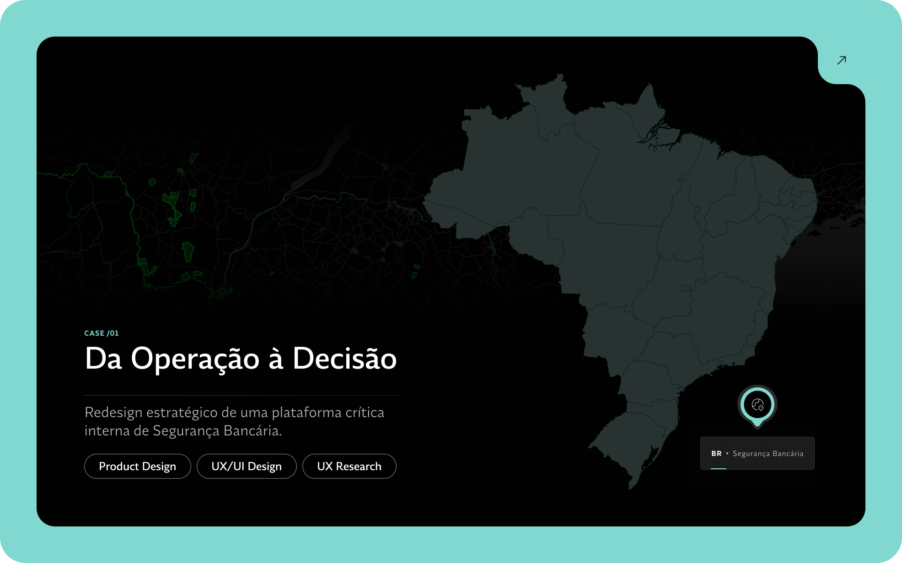
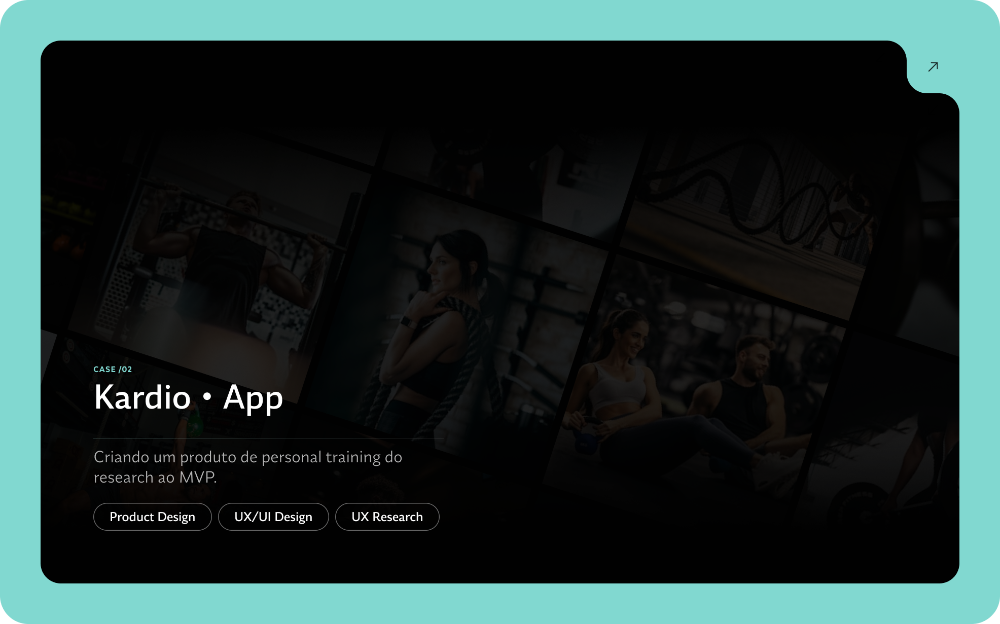
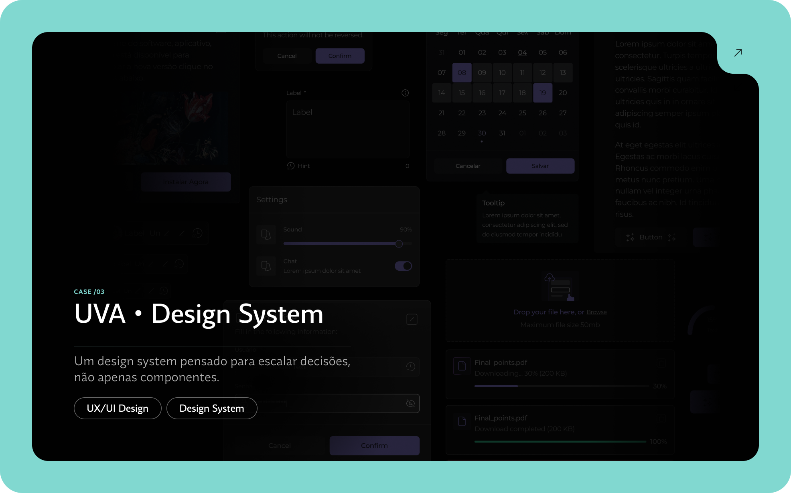

Projetos



Sobre mim
Meu design nasce da escuta e da observação. Gosto de transformar necessidades em soluções visuais claras, funcionais e consistentes, que façam sentido para quem usa.
Acredito que cada projeto é uma oportunidade de unir estética, usabilidade e propósito — para criar experiências que realmente importam.
Repertório